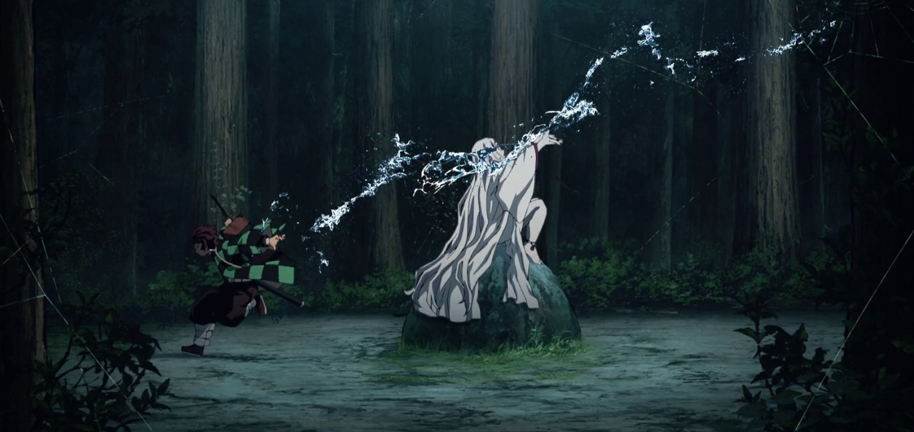
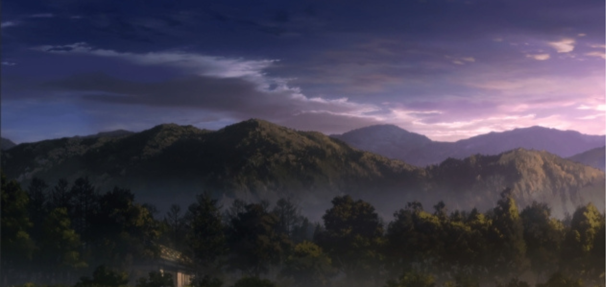
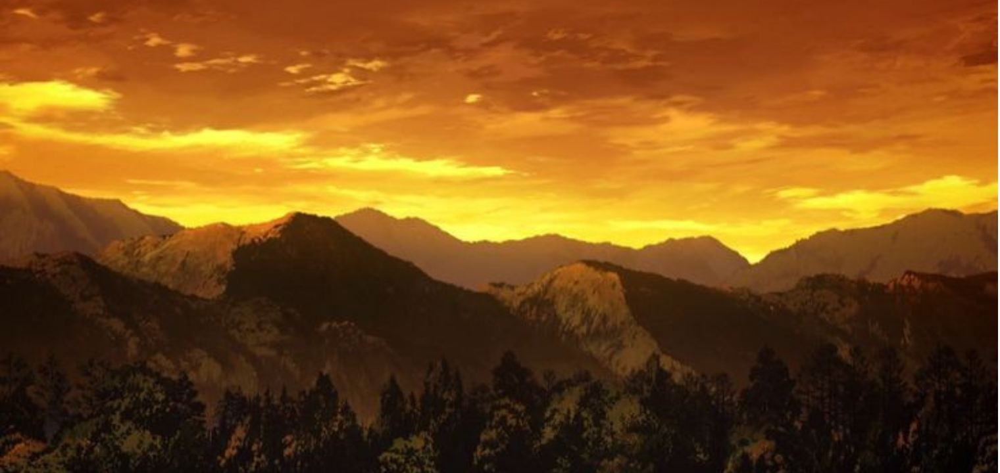

bien que ce ne soit pas un seul endroit, c'est dans les montagnes que la majoritre des cene imortante se produisent comme vous pourrez lz constatez sur la photo emblematique ci-dessous.

Dans la serie les montagnes ont une place tres importante donc elles ont tres souvent un visuels tres travailler et tres attractif. je vous laisse donc admirer les deux autres cliché suivant :


Ne sont-ils pas beau ? cela va justement nous permettre de basculer sur la plus belle foret de la serie.
Dans le tableau ci-dessous vous trouverais une notation basée sur un avis subjectif de l'ambiance et de l'esthetique.
| critère | descrption | note /20 |
|---|---|---|
| ambiances | nuit, tension | 7/10 |
| esthetique | Assez marquante | 7/10 |
| total | 14/20 |